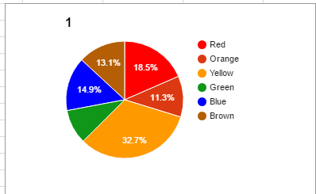
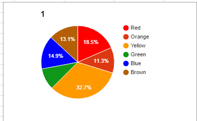

sea star info
Data
There seems to be more Ochre sea star when their is more global warming.
Visuals

 

conclusion
I think that they do change at different rates but they arnt that big of changes except for the green one
it seems to come off way faster.